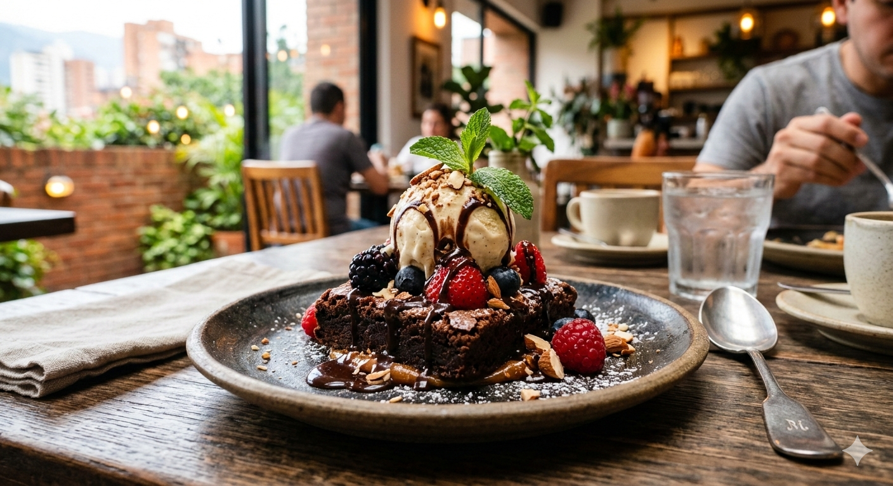
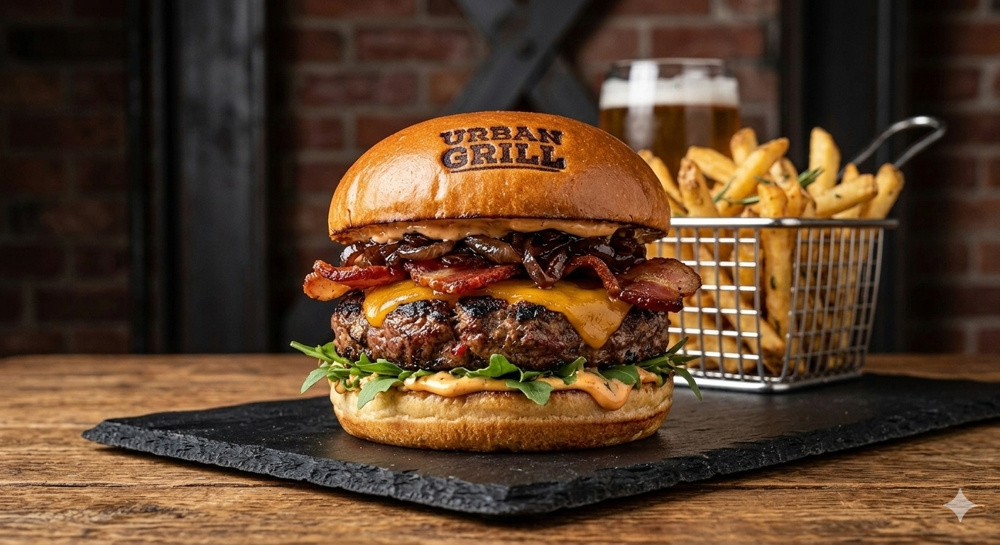
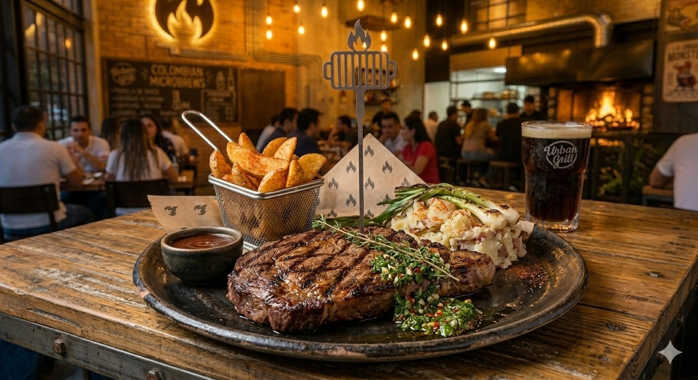
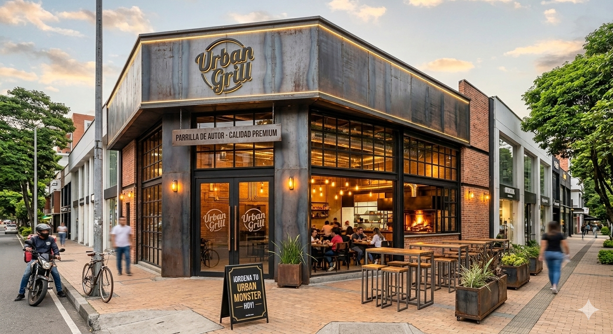
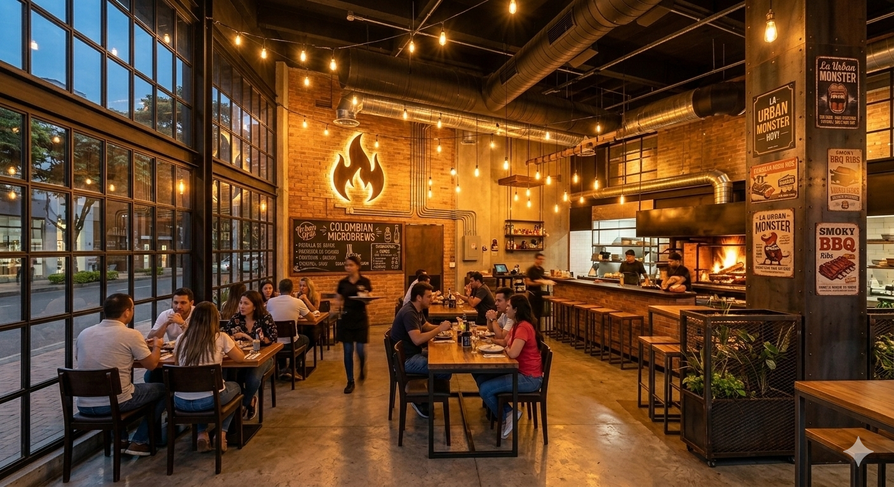
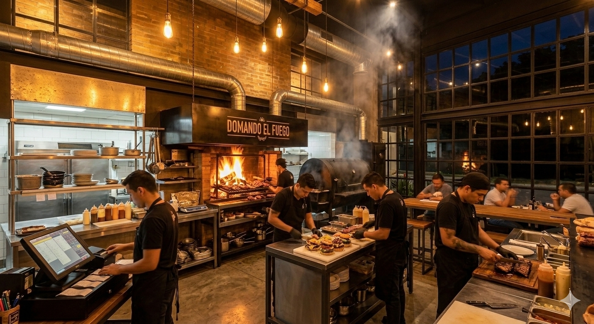
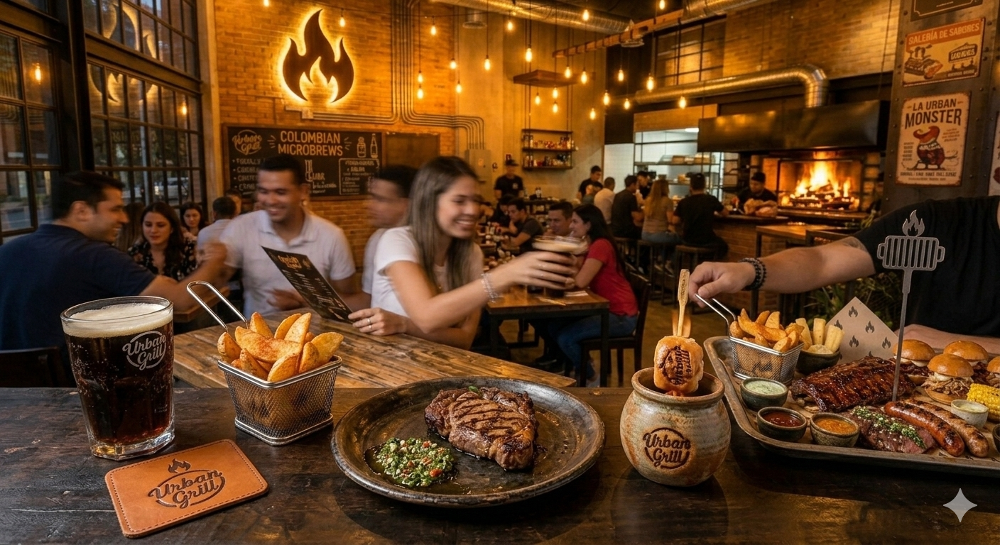

inicio
En Urban Grill no solo hacemos comida; dominamos el arte del fuego. Combinamos la intensidad de la parrilla tradicional con la sofisticación de ingredientes premium y locales para ofrecerte una experiencia gastronómica urbana e inolvidable. Cada bocado está diseñado para satisfacer al paladar más exigente y al hambre más voraz. Olvida lo convencional y descubre cómo sabe la verdadera pasión por la carne.
- 🔥 Parrilla de autor
- 🍔 Ingredientes Premium
- 🥓 Sabor sin censura
- ⚡ Servicio urbano y rápido
Historia
| El Origen (2018) | Todo empezó en un garaje, con una parrilla prestada y la obsesión por encontrar la hamburguesa perfecta. Lo que comenzó como un experimento entre amigos, pronto encendió la chispa de algo más grande. |
|---|---|
| La Llama se Extiende (2021) | Con la receta dominada, decidimos llevar nuestro sabor a la calle. Abrimos nuestro primer local físico en el corazón de la ciudad, llevando la auténtica experiencia del grill a todos los rincones urbanos. |
| Hacia el Futuro (Hoy) | Urban Grill es más que comida, es una comunidad. Seguimos innovando con nuevos sabores y técnicas, manteniendo siempre la promesa original: pasión por el fuego y calidad sin compromisos |
productos



galeria
 |
 |
 |
|---|---|---|
 |
 |